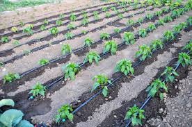
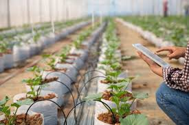
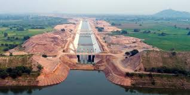
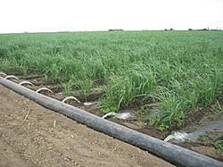

Irrigation Methods in India
Choosing the right system depends on crop, soil, water availability and investment capacity. Government subsidies often support micro-irrigation adoption.

Drip Irrigation
Delivers water directly to roots via emitters; highly water-efficient and ideal for orchards and high-value crops.

Micro / Smart Irrigation
Includes micro-sprinklers, precision fertigation, sensor-driven scheduling and automated valves for efficient water use.

Groundwater & Lift Irrigation
Pumps and tube wells lift groundwater for irrigation; sustainable use needs recharge and responsible pumping.

Subsurface Irrigation
Buried tubing supplies water to the root zone, reducing evaporation and surface runoff; used in precision systems.